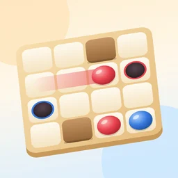
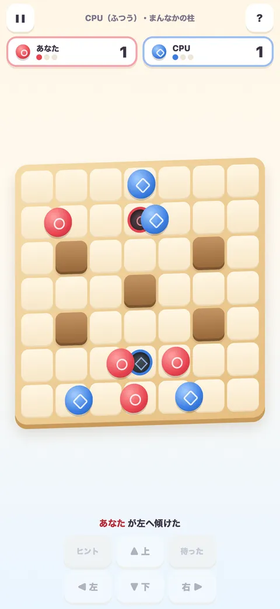
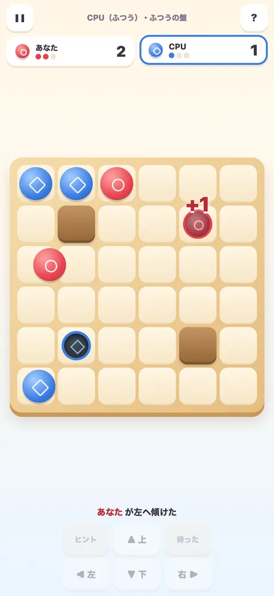
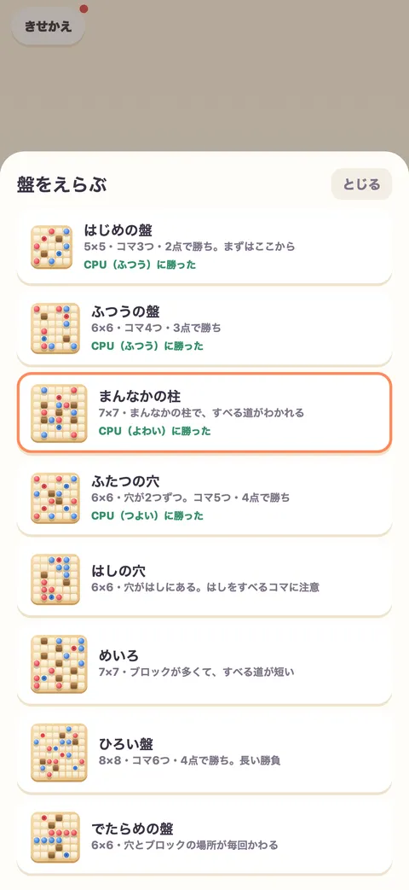
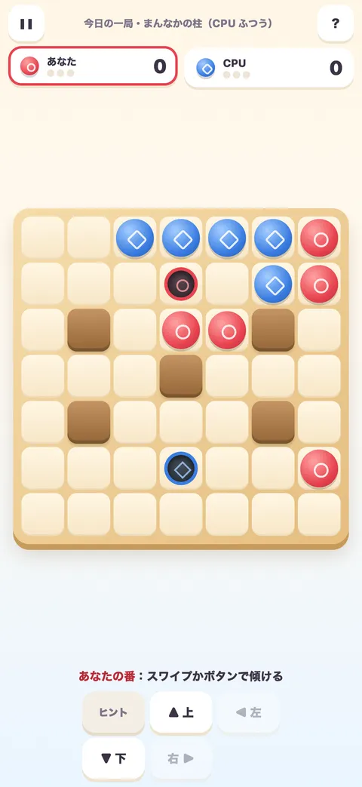
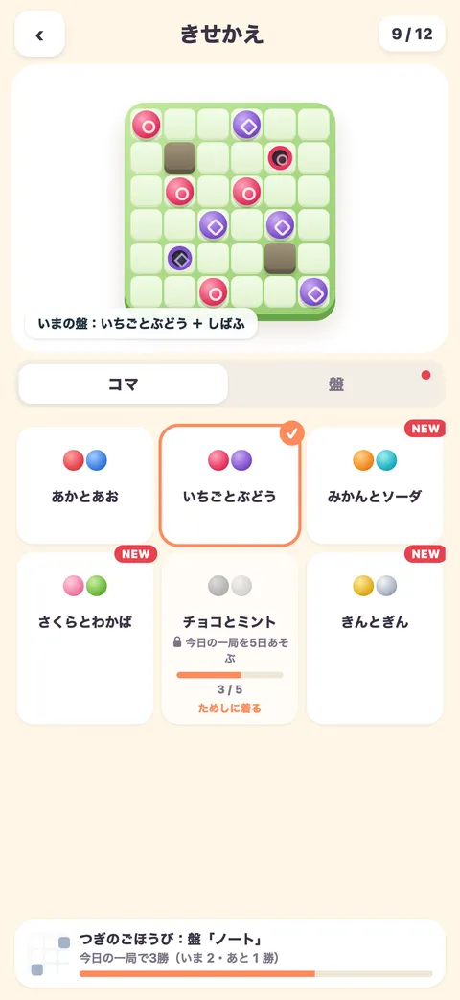

傾けて落とすボードゲーム（iPhone）
ぐらっと
盤をぐらっと傾けて、
コマを自分の色の穴へ。
交互に盤を上・下・左・右のどれかへ傾けます。自分のコマも相手のコマも、全部いっしょにすべります。入れたい。でも入れさせたくない。かんたんなルールで、毎回ちがう読み合いになります。
App Store で近日公開無料・広告あり／iPhone（iOS 18 以降）


アプリの画面
ぐらっととは？
ぐらっとは、盤を上下左右に傾けると、全部のコマがいっしょにすべる。自分の色の穴の上を通ったコマが落ちて1点、先に決まった点で勝ち。CPU（3段階）・2人で1台・毎日かわる今日の一局。8つの盤。無料（広告あり）のiPhoneアプリ。
- 料金無料・広告あり
- 対応iPhone（iOS 18 以降）
- ジャンル対戦





こんな人におすすめ
- 短い時間で頭をつかう対戦がしたい人
- 家族や友達と、1台で手軽に遊びたい人
- ルールがかんたんで、考えるほど深いボードゲームが好きな人
遊び方は3ステップ
- 傾ける盤をスワイプするか、下のボタンで上・下・左・右へ傾けます。何も動かない向きと、ひとつ前の逆向きは選べません。
- すべる全部のコマが、かべ・ブロック・ほかのコマに当たるまで すべります。
- 穴で1点自分の色の穴の上を通ったコマは落ちて1点。相手の色の穴は通りすぎます。先に決まった点を入れたら勝ち。
ルール
盤を傾ける
交互に、盤を上・下・左・右のどれかへ傾けます。盤の上のコマは、自分のも相手のも全部、かべ・ブロック・ほかのコマに当たるまで すべります。
自分の色の穴で1点
コマが自分の色の穴の上を通ると、落ちて1点。相手の色の穴の上は通りすぎます。先に決まった点（盤ごとに2〜4点）を入れたら勝ち。
選べない向き
何も動かない向きと、ひとつ前の向きの逆（もとにもどすだけ）には傾けられません。同じ1回で2人とも届いたら、傾けた人の勝ち。
特徴
- 8つの盤5×5 から 8×8、毎回かわる でたらめの盤も
- 3段階の CPUよわい・ふつう・つよい
- 毎日今日の一局日付で決まる盤で CPU と1局
- 12のきせかえコマ6・盤6。遊んだ記録だけで手に入る
ぐらっと を無料で遊んでみる
App Store で近日公開無料・広告あり／iPhone（iOS 18 以降）
くわしい遊び方
交互に、盤を上・下・左・右のどれかへ傾けます。盤の上のコマは、自分のコマも相手のコマも全部、かべ・ブロック・ほかのコマに当たるまで すべります。コマが自分の色の穴の上を通ると、落ちて1点。相手の色の穴の上は通りすぎます。先に決まった点（盤ごとに2〜4点）を入れたほうの勝ちです。
- 傾け方：盤をスワイプするか、下の「上・下・左・右」のボタンを押します
- 選べない向き：何も動かない向きと、ひとつ前の向きの逆（もとにもどすだけ）には傾けられません
- モード：CPU と対戦（よわい・ふつう・つよい）／2人で対戦（1台を交代で）／今日の一局（毎日かわる盤で CPU と1局）
- 盤：はじめの盤（5×5）・ふつうの盤・まんなかの柱・ふたつの穴・はしの穴・めいろ・ひろい盤（8×8）・でたらめの盤 の8つ
よくある質問
盤を傾けてコマを穴に入れる対戦ゲームは？
ぐらっとは、盤を上・下・左・右に傾けて、全部のコマをいっしょにすべらせる2人用のボードゲームです。自分の色の穴の上を通ったコマが落ちて1点。CPU（3段階）や、1台の iPhone を2人で交代して遊べます。
無料ですか？
はい、無料でダウンロードして遊べます（広告あり）。App Store で近日公開です。
どの端末で使えますか？
iPhone（iOS 18 以降）で使えます。Android 版はありません。
赤と青の見分けがつきにくい
赤のコマには丸、青のコマには ひし形のしるしがあります。穴のふちも、同じ色で分けています。
ボタンが押せない向きがある
傾けても何も動かない向きと、ひとつ前の向きの逆には傾けられません（もとにもどすだけの手が続かないようにするためです）。押せない向きのボタンはうすく表示されます。
決着がつかないときは？
盤ごとに傾ける回数の上限があります。上限に達したときや、傾けられる向きがなくなったときは、点の多いほうの勝ちです（同じ点なら引き分け）。
iPhone を傾けて遊びたい
設定の「端末を傾けて動かす」を入にすると、対局中に iPhone を傾けて盤を動かせます。はじめは切になっています。傾きの情報は、その場で盤を動かすためだけに使い、保存や送信はしません。
ヒントと待った
CPU と対戦では「待った」で自分の番までもどせます。「ヒント」はおすすめの向きを教えます。ヒントは1日1回無料で、そのあとは短い動画を1本見ると使えます。
今日の一局を もう一度遊びたい
今日の一局は1日1回だけ記録します。2回目からも遊べますが、記録には入りません。盤と置き方は日付で決まり、だれでも同じです。
きせかえの手に入れ方
遊んだ数や勝った数などの記録だけで手に入ります（コマ6・盤6）。課金や広告では手に入りません。
音や振動を止めたい
タイトル画面の「音」「BGM」のボタンか、設定で、オン・オフを切り替えられます。
成績を消したい
成績・設定・きせかえは、この iPhone の中にだけ保存しています。アプリを削除すると成績も消えます。
お問い合わせ
不具合やご要望は、メールでお知らせください。お使いの iPhone の機種と iOS のバージョンを書いていただけると助かります。